Overview
In this project, we will learn how to rasterize triangles in the image coordinates and the Barycentric coordinates. Then we will apply texture mapping from the original figure to the distorted resultss by sampling on different mipmap level. In addition, we implemented a transform for translation, scaling and rotation.
Section I: Rasterization
Part 1: Rasterizing single-color triangles
The way we rasterize a triangle is as follows:
- Find the bounding box of the triangle. The bounding box is defined as the rectangle from
(x_min, y_min)to(x_max, y_max).x_minis the minimum x coordinate of the three vertices, flooring to the nearest integer;x_maxis the maximum x coordinate rounding up to ceiling. Same thing applies to the y coordinate; - For each pixel center in the bounding box, we test if the point is in the triangle using the naive normal vector method. Notice that we need to first know the positive direction of each edge;
- If the point is in the triangle, we send the according color to the frame buffer.
This algorithm requires us to check every pixels in the bounding box of this triangle. The sampling times is proportional to the maximum height $H_{max}$ and maximum width $W_{max}$. So it is no worse than checking every points.
|
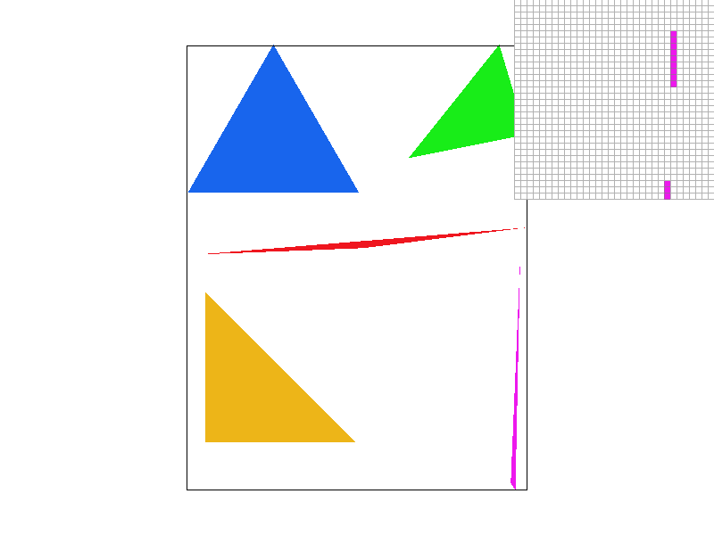
|
|
|
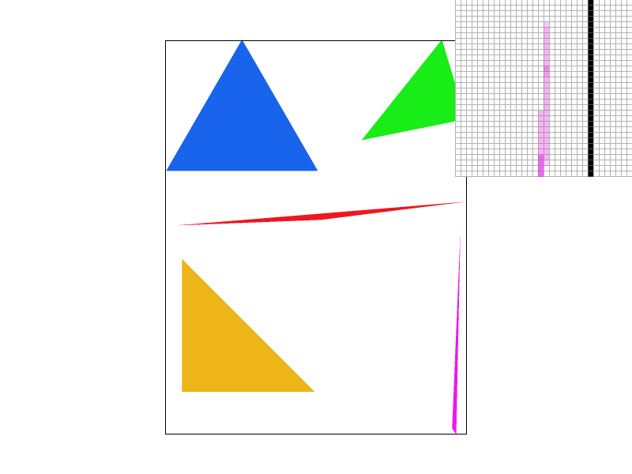
|
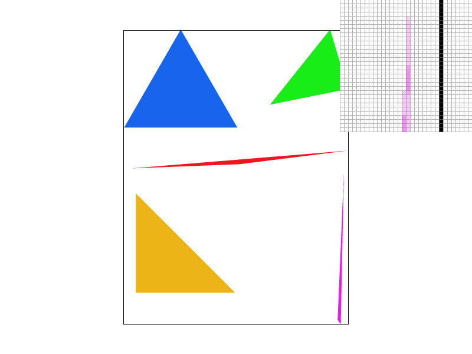
|
The left upper figure is the result of rasterization without any supersampling. We can easily find many jaggies at thin triangle edge and even some pixels have no triangle shape.
We optimized the algorithm by changing the points in the image coordiantes by using Barycentric coordinates. Since $\alpha + \beta + \gamma = 1$ in Barycentric coordinates, we don't need to compute $\gamma$ directly and roughly saves about $1/3$ of the runtime. This is more obvious for larger triangles.
Image coordinate method
time used for rasterize 0.501 ms
|
Barycentric coordinate method
time used for rasterize 0.423 ms
|
Part 2: Antialiasing triangles
To implement the supersampling, we need two steps.
- Sample the images with higher sampling rate and add pixels to the sample buffer
- Then downsample (pooling) the sample buffer according to the sampling rate to the frame buffer to match the pixels
- An extra trick is we also need to supersample the lines and dots in case the downsample makes the lines incorrect
The super sampling is very useful to antialise. From the above figures of sampling rate = 4, 9, 16, we find that the discontinunity is mitigated gradually. In sample rate = 9 and 16, the needle part of this pink triangle is blured and is more reasonable.
The jaggies are actually aliasing made by high-frequency signals. So supersampling is just a window average (low-pass) filter. After passing the low-pass filter, the original figure will not have very hard edges and the sampled figure is therefore performs better.
Part 3: Transforms
|
|
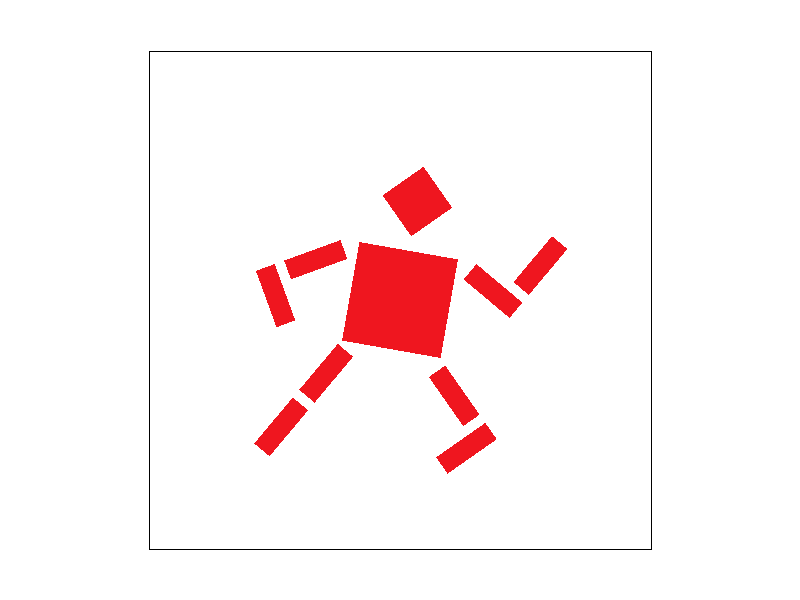
|
In this part, we first implemented three transform methods and then changed the .svg file to make the cube man in this figure like running. Basically, it is very hard to directly change the parameters in the svg file. Maybe it is easier to use Illustrator change its angles and position.
Section II: Sampling
Part 4: Barycentric coordinates
The barycentric coordinate is defined based on the edges of triangle. To rasterize the triangle using barycentric coordinate, we can map the texture of this triangle to the image with follow steps.
- Iterate over the pixels in the bounding box, by supersampling according to the rate
- Choose two angles A and B, calculate the position of each pixel in the barycentric coordinate. The distance is from the chosen vertic to the pixel point over the height of this triangle related to this vertic.
- After getting $\alpha$, $\beta$ and $\gamma = 1 - \alpha - \beta$, we can map the color according to three vetices by $c = c_0\alpha + c_1\beta + c_3\gamma$
Part 5: "Pixel sampling" for texture mapping
The texture mapping is implemented in the barycentric coordinate as well, but the difference is that we are mapping the texture of another bitmap rather than vector graph.
- Nearest mapping means when we sample every pixel for the texture, we only the find the nearest integer number and its corresponding pixel in the original image. So it is very likely to find some large blocks of color, because those points are sample from a very close position from the original image.
- Bilinear mapping considers the four nearest points near the sampling point, basically the upper left, upper right, bottom left and bottm right. These four points formulate a high dimensional surface and we can use three interpolations to know the color of the sampled point on this surface.
|
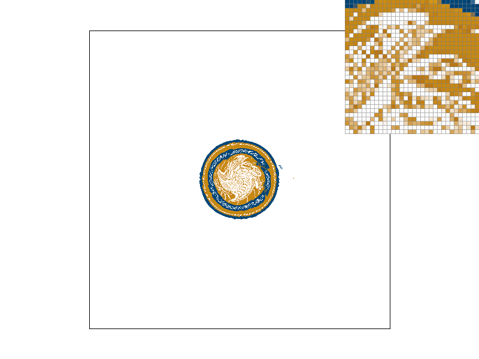
|
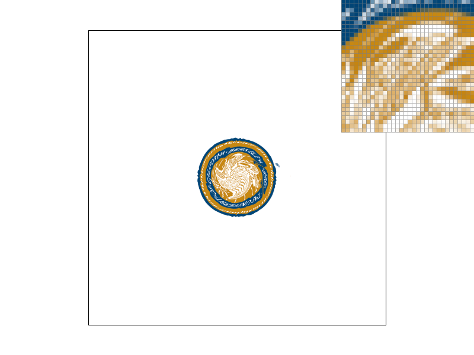
|
|
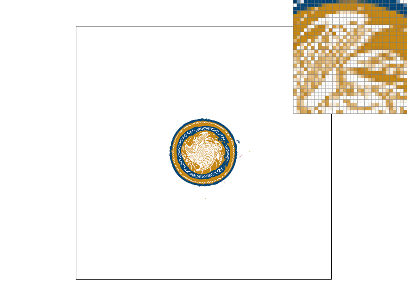
|
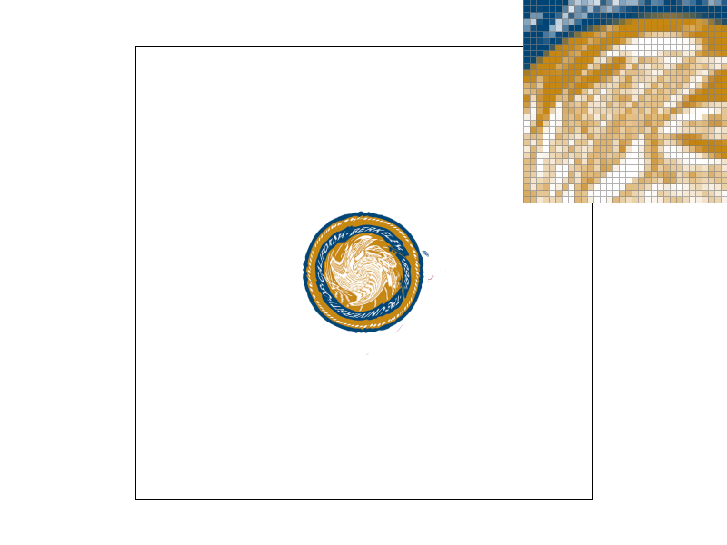
|
Here we compare the results of nearest and bilinear sampling at sampling rate = 1 and 16. We find that when rate = 1, the nearest and bilinear have large difference at each pixel, but they have little difference when rate = 16. This is beacuase when we apply supersampling, we will also visit the points between integer pixels on the original image. The downsampling will blur the original image so the nearest point also contain the information for nearby pixels. Therefore, if we only sample on the original image, bilinear method performs better for antialising.
Part 6: "Level sampling" with mipmaps for texture mapping
The basic framework of mipmap sampling is very similar to the texture mapping. The difference is that we need to pre-downsample the image into lower resolution before we actually execute the sampling. In addition, we will also sample from one or multiple downsampled layers to mitigate the aliasing problem.
- Iterate every sample pixels and calculate their $\alpha (u)$ and $\beta (v)$ in the barycentric coordinate.
- Then for each pixel, $+1$ on $x$ or $y$ direction, and get $du$ and $du$ by subtracting the original $u,v$
- Calculate the degree of level $D$ according to the $log$ equation using $du$ and $dv$
- For nearest method, we will round $D$ and sample at the $D$ mipmap level
- For linear method, we need to sample at floor($D$) and ceil($D$) and interploate between two layers
In order to store the mipmap figure, we need to store extra $1/3$ pixels for rgb figure. It costs more memory for NEAREST and LINEAR methods. Sampling time at ZERO level and NEAEST level are identical, but sampling LINEAR level will spend double times for sampling pixels and also spend some extra time for interpolation.
However, using mipmap allow us to achieve coordinate-relative antialising by sampling in pre-calculated, optimized sequences of images, each of which is a progressively lower resolution representation of the previous. They are intended to increase rendering speed and reduce aliasing artifacts. A high-resolution mipmap image is used for high-density samples, such as for objects close to the camera; lower-resolution images are used as the object appears farther away. This is a more efficient way of downfiltering (minifying) a texture than sampling all texels in the original texture that would contribute to a screen pixel; it is faster to take a constant number of samples from the appropriately downfiltered textures.
|
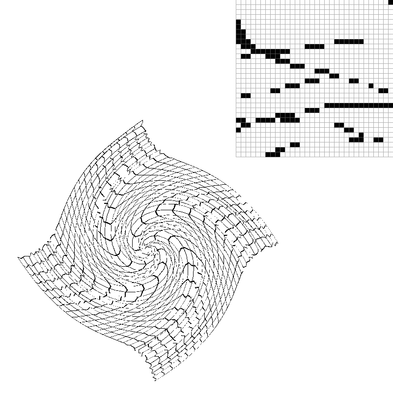
|
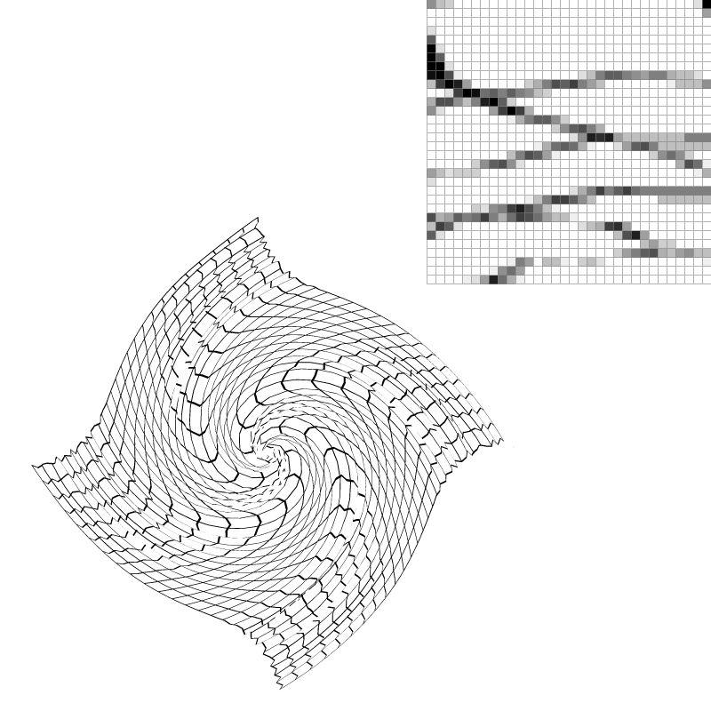
|
We test the mipmap method using a customized distorted grid. First, we show the nearest sampling with different sampling rates. It is very obvious that without supersampling, the original figure has very strong aliasing phenomenon (some discontinuous curves). So, we need some antialising methods !
L_ZERO, P_NEAREST |
L_NEAREST, P_NEAREST |
L_LINEAR, P_NEAREST |
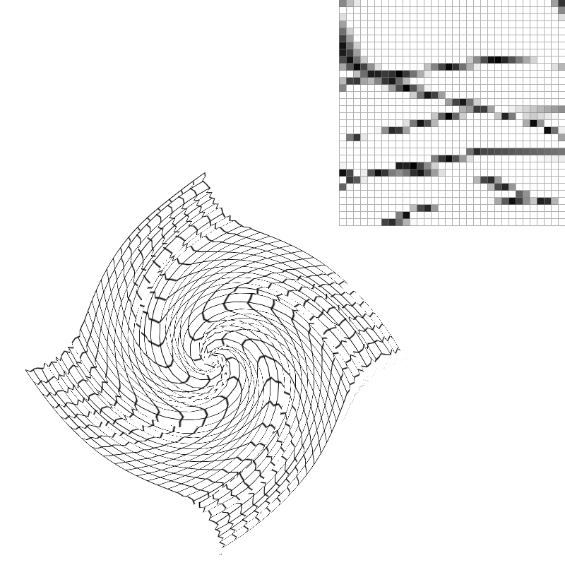
L_ZERO, P_LINEAR |
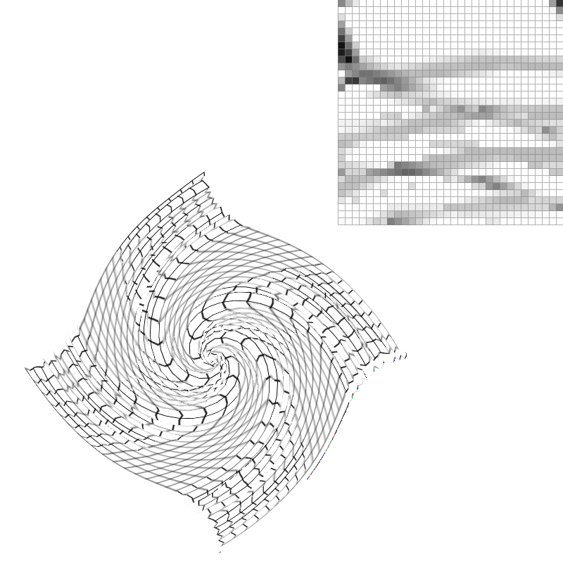
L_NEAREST, P_LINEAR |
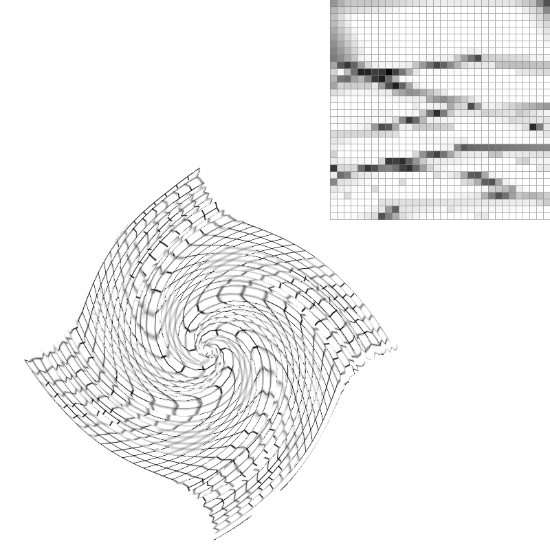
L_LINEAR, P_LINEAR |
Here we show six figures combining "L" mipmap level and "P" pixel sampling methods. We can find that by applying bilinear interpolation on pixels or sample on high-level mipmap levels, the discontinunity was eliminated.
But in the figure L_NEAREST, P_LINEAR, it overly filters all high-frequency information and makes the image blured.
On the contrary, the L_LINEAR, P_LINEAR is better since it still remains the high-frequency features on the lower level maps.
Section III: Art Competition
Part 7: Draw something interesting!
This cute panda is the mascot of 2022 Beijing Winter Olympic Game! We first triangulate the original image using triangulate tool. Then using our program to show the .svg file as png.